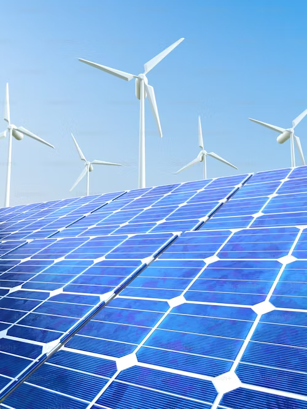

Давайте вместе строить чистую энергию для будущих поколений
О нас
Новости
28 Сен
Форум "Российская энергетическая неделя" в Москве
Участники представили проекты, направленные на повышение эффективности использования возобновляемых источников энергии. Презентованы новые инициативы и проекты
15 Ноя
Китай — лидер в развитии возобновляемой энергетики
К 2030 году на Китай придется 60% глобального роста мощностей в этой сфере. Это стало возможным благодаря государственной поддержке, экономичным технологиям и низким затратам на финансирование
10 Окт
Мировые инвестиции в зеленую энергетику — рекорда
В 2024 году расходы на возобновляемую энергетику впервые превысили затраты на ископаемое топливо, достигнув $2 трлн. Это важный шаг к глобальному энергопереходу
10 Ноя
В России запущена новая солнечная электростанция
Запуск Аршанской солнечной электростанции мощностью 37,6 МВт в Калмыкии знаменует собой очередной успех России в развитии возобновляемых источников энергии
Посмотреть все новости →
Наша команда
Дмитрий Сергеевич
Технический директор
Эксперт в области возобновляемой энергетики с более чем 15-летним опытом. Спокойный, дружелюбный. Следит за техническим состоянием проектов.

Марк Витальевич
Директор компании(CEO)
Опытный лидер с более чем 20-летним стажем в управлении крупными проектами в области возобновляемой энергетики. Дружелюбный.

Анна Викторовна
Финансовый директор
Специалист по финансовому планированию и управлению рисками. Она отвечает за стратегию финансирования проектов компании.
Также с нами работает множество квалифицированных специалистов в области технологий, устойчивого развития и управления проектами, которые делают нашу компанию лидером в отрасли
FAQ
Как VerduraX получил своё название?
VerduraX получила свое название от латинского слова "verdura", что означает "зелень" или "свежесть". Оно символизирует приверженность компании экологичности и поддержке возобновляемых источников энергии. Буква "X" в названии добавлена для обозначения инновационного подхода и расширения возможностей в устойчивом развитии.
Для чего нужен VerduraX?
VerduraX — это платформа, созданная для поддержки возобновляемых источников энергии и решения экологических проблем.
Она предоставляет доступ к актуальным новостям, исследованиям и образовательным материалам, чтобы пользователи могли лучше понять важность перехода на экологически чистую энергию. VerduraX помогает находить и поддерживать проекты, направленные на развитие зелёных технологий, борьбу с изменением климата и сохранение природных ресурсов.
Кроме того, платформа объединяет людей, компании и организации, заинтересованных в создании устойчивого будущего, предоставляя им возможности для взаимодействия и обмена идеями.
Где работает VerduraX?
VerduraX — это глобальная онлайн-платформа, направленная на распространение новостей, поддержку инициатив и продвижение проектов, связанных с возобновляемыми источниками энергии. Мы стремимся объединить людей, организации и компании, которые работают над решением экологических проблем и переходом к устойчивому будущему.
Главный офис VerduraX расположен в Москве, где работает команда разработчиков, аналитиков и экологических экспертов. Именно здесь разрабатываются стратегии по улучшению функционала платформы, формируется контент, и осуществляется поддержка пользователей. Благодаря этому, VerduraX поддерживает как локальные, так и международные проекты, помогая сделать экологически чистую энергию доступной для всех.
Что делает VerduraX?
VerduraX — это платформа, посвящённая возобновляемым источникам энергии. Она предоставляет пользователям доступ к актуальным новостям и информации в этой области, а также помогает поддерживать проекты, направленные на решение экологических проблем.
Пользователи могут не только узнавать последние тенденции в сфере зелёной энергетики, но и участвовать в инициативах, которые способствуют переходу к устойчивому будущему.